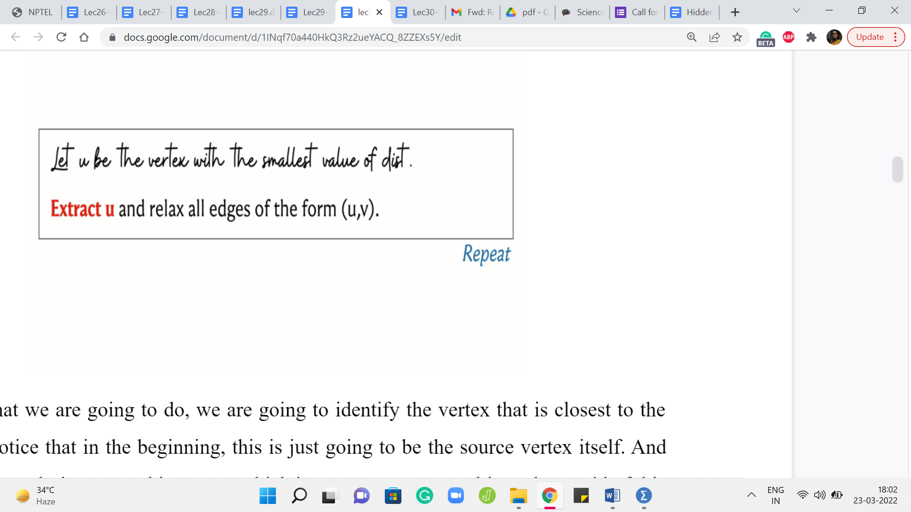

M 1 (Dijkstra’s Algorithm)
Lecture - 30
Shortest Paths - Module 1 (Dijkstra’s Algorithm)
(Refer Slide Time: 00:11)

Welcome back. Let us continue from where we left off in the last segment where if you recall we are talking about the single-source shortest path problem. And we said that, well, if you are dealing with an unweighted graph when all the edge weights can be thought of as one, then an algorithm that you have already seen from last week, which is breadth-first search, actually gives you the shortest path information that you are looking for.
We also saw that breadth-first search fails even on small examples once edge weights do come into the picture. We discussed a way of making BFS work when all the edge weights were positive integers, and we did this by puncturing the edges with artificial intermediate vertices so that BFS would be sensitized to these weights by having to go through these prolonged paths.
However, we also observed that this can be an expensive trick. So we wanted to see if there was a more efficient way of achieving the same outcome, which is to say, having a way to determine the shortest paths but without having to go through this expensive route of creating these large number of artificial vertices. So that is going to be the focus for this segment. We are going to deal with the case when we have only positive edge weights to worry about, and we will see if we can essentially predict what BFS was doing on that modified graph but without having to go through the trouble of actually modifying the graph.
(Refer Slide Time: 01:50)

So we are going to continue working with a distance array, which will typically be initialized in this way. So you have a fixed source vertex and the distance from the source to itself is going to be zero. And to begin with, you do not know anything about the distances of the other vertices. So we will typically initialize these values to infinity in principle. And in your code, you want this to be a sufficiently large number.
(Refer Slide Time: 02:31)

Now, let me introduce the concept of a tense edge, which is a notion that keeps coming up in many shortest path algorithms. So let us say that we have our source vertex here, and we have an edge from ‘u’ to ‘v’ whose weight happens to be ‘w.’ And let us say that we have some current understanding of how to get from the source to the vertex u, and this is reflected in the distance array with the value ‘t,’ which is to say that there is some path from ‘S’ to u, whose total cost is t.
And similarly, we have some value in the distance array for the vertex v. That value – let us call it ‘d’ – which is again just to say that our current understanding is that the best way to get to v from the source S is via a path whose total cost is d. Now, we say that this edge here is tense if the following inequality holds. The inequality is t + w < d.
Now, please feel free to pause here for a minute and think about: What does this inequality really mean? Does this inequality imply that there is something about the way you have stored your distances that does not seem quite right? And maybe that is why you are tense because something needs fixing. So please take a moment here and think about what is this inequality really telling you.
Alright, so hopefully it is fairly visible that what this inequality is telling you is that there is a better way to get to v compared to whatever option you had in mind when you stored the value ‘d.’ And that better option is to simply come to u first in whatever way that you were able to come to u with a total cost of t, and then jump across the edge from u to v with an additional cost of w. Even when you put those two together, you are still better off than d.
Now, let me just quickly point out that because of the way this picture is drawn, you might be tempted to believe that this definition only makes sense when t and d are finite values and that we actually have these paths that we know something about. But this is just a limitation of the picture. The definition does make sense even when t or d, or both happen to be infinite.
So let us consider what happens if t is infinite. Well, that just means that we have no idea about how to get to the vertex u. So, if we do not know how to get to u, then we are not going to be able to leverage the edge from u to v to find a shorter path to v via u. So if you have a vertex for whom the distance value right now is ∞ (infinity), none of the edges that go out of that vertex will ever be tense because infinity is never less than anything.
So that is what happens if t is ∞. But on the other hand, if t is finite, but d is ∞, that means that we do not know, anything about how to get to v, but we do know something about how to get to u. So that means that the edge from u to v is going to be tense whenever d of v, the distance value of v is ∞.
And in particular, if you think about what happens in the first step, notice that the distance of S is zero and everything else is ∞. So think about: What you can see about all the edges that are going out of S? Well, as you might guess, all of these edges are going to be tense.
Let us consider an edge from S to v with a weight of w. Well, we know that t in this example, which is the distance from S to itself, is zero. So what we have is zero + w on the left-hand side and ∞ on the right-hand side. So this equation certainly holds. So at the very first step at the beginning, you definitely have as many tense edges, as there are out neighbors of the source vertex S.
(Refer Slide Time: 06:58 & 07:12)


Now, what do you do when you see a tense edge? Intuitively, you want to resolve this tension. And this process is typically called relaxation. So whenever you see a tense edge, you probably want to account for the information that you have and somehow fix the situation with the distance array.
So the process of relaxing an edge is exactly what you expect it to be. So let us go back to this picture of what a tense edge looks like and what we want to do is get rid of this old information that we have with regards to the distance of the vertex v. So d is clearly outdated, and we can do better.
So what we do is we update the value of the distance of v with d + w, which is, as of now, the better way to get to the vertex v. And if you want to maintain a predecessor pointer which tells you, well, what was the previous vertex on the shortest path, you could do that. And you could update that to being the vertex u for the vertex v.
So predecessor of v is going to be u because that is the last edge on the current best path that you are working with. So now that we know what a tense edge is and we understand the process of relaxing it, let us present an algorithm, which is based on performing this operation a number of times in a systematic way.
(Refer Slide Time: 08:24)

So here is what we are going to do. We are going to identify the vertex that is closest to the source and notice that in the beginning, this is just going to be the source vertex itself. And what we want to do is extract this vertex, which is to say we want to ultimately get rid of this vertex. Just like we do with BFS, we look at the vertex which is at the head of the queue, we put it in the limelight for some time, we process all of its neighbors, all of its unvisited neighbors, and then we get rid of the vertex.
So we want to do something analogous here, but in a way that is sensitive to the information about the edge weights. So what we are going to do is pull out the vertex that is closest to the source, and we are going to go to all of its neighbors and if any of those incident edges are tense, then we are going to relax them, and then we throw away this vertex.
(Refer Slide Time: 09:24)

So this method is at the heart of what is popularly known as Djikstra’s algorithm and let me just present this to you in a slightly more explicit fashion, and this is still going to be pseudocode. So what we have is the distance array, which to begin with has a zero value for the source and values initialize to infinity for all the other vertices. And what we want to do is insert all of these values into some sort of a priority queue or a heap, which is essentially a data structure that supports fast extraction of the minimum value.
So that is why we are interested in using a heap. It is just going to be efficient for the most frequently performed operation in this algorithm. So as long as we have elements left on the heap, what we want to do is extract the element that has the smallest value – the value being the distance from the source. And what we want to do is relax all the tense edges that are incident to the extracted vertex.
So recall that what the relaxation step entails is an update in the distance array. You want to make sure that the distance of v is updated to the distance of u + the weight of the edge from u to v, whenever this sum is better than the current value of the distance of v. And also, if you are maintaining a predecessor array then you want to update the predecessor of v so that it becomes the vertex u.
So this is what you do with all the tense edges. And remember that whenever you do the relaxation, you also want to remember to update the value of v in the priority queue as well. So that is the decrease key operation here. And this is essentially the whole algorithm.
So the idea is to constantly find vertices that are currently the closest to the source, and keep relaxing all the edges that are incident on them. And by the time you have processed all the vertices once your queue becomes empty, then you are pretty much done.
Now, the interesting claim of course is that once you have finished, then the distance array is a true reflection of the actual shortest path distances from the source to the corresponding vertices. The intuition for this is that this algorithm explores the graph in the order in which the vertices are being extracted.
So it is a lot like BFS but somehow has been sensitized to account for the edge weights. And if at the point when a vertex is being extracted, this is not the best way to get to the vertex. The value of the distance of that vertex is worse than the cost of some shortest path to that vertex. Then assuming that you had done everything right up to the previous step, which is like an induction hypothesis, you could argue that the better part would have been a witness for actually being a reason to pull up this vertex even earlier.
So in some sense, the framework for how you prove the correctness of this algorithm is the structure of it is similar to how you work out the correctness for the BFS algorithm. But now, you have to carefully account for the way it is, and really the fact that there are no negative weight edges does play a role in the proof of correctness.
So just in case you have not seen this proof before, I would encourage you to either puzzle it out on your own based on what we have discussed so far or you could look up the references in the description of this video and read up on the proof of correctness if you are interested. So now let us switch gears a little bit and focus on some implementation issues.
So naturally, we want to store the values of the distances in our priority queue so that we can extract the minimum element efficiently, and that is something that we do often. So it makes sense to use a priority queue. Unfortunately, in C++, the built-in priority queue data structure does not have native support for updating key values.
So notice that you do have to decrease key values often whenever you are relaxing edges, and there is not a way to do this directly. You might of course say that, well, what about just inserting a new value for v with the updated distance and getting rid of the old one. Well, in a priority queue getting rid of a value is not as easily done.
You can get rid of the thing that has the minimum value but getting rid of an arbitrary value is harder. However, this idea of simulating an update by first deleting the element that you are working with, and then inserting the new value for that element – that makes sense, and it can be implemented with what is called a set. So let us review our options in the C ++ STL.
(Refer Slide Time: 14:15)

So we have a priority queue or a heap, which is what we were originally proposing to use. And with a priority queue, you get a constant time lookup for the largest element, and you have logarithmic complexity. So this is logarithmic in the size of the collection for either deleting this largest element or for inserting a new element. Right. So that is what you get with a priority queue.
On the other hand, you also have the possibility of using a set, which basically will keep track of a sorted collection of items. So you can still have quick access to either the largest or the smallest elements depending on the order in which you set up your sorting, and on top of that, you can also search for elements and insert and remove elements with again a logarithmic expense. So that is comparable to a priority queue.
So what we are going to do is essentially use a set instead of a priority queue. By the way, I should mention that although I am quoting the C++ documentation here in saying that you can look up the largest element but even for a priority queue you can pass an additional parameter and change that from largest to smallest.
(Refer Slide Time: 16:02)

So that is not really the problem. The issue with using a priority queue is the fact that you cannot update the values after you have inserted them, and you cannot remove an arbitrary value quickly. You can delete the extreme value, but you cannot delete an arbitrary value. So that is why we will be using a set instead of a priority queue. So let us look at what that looks like.
So we are going to basically split this decrease key operation into two steps. So first delete the old value, and then insert the appropriate new distance that is going to be the distance of u + the weight of the edge from u to v. So hopefully that makes sense. And notice that extract min is also easy to simulate because the collection is sorted when you use a set, you can just access the first element and that is the one to remove.
(Refer Slide Time: 17:00 & 17:30)


So you can also invoke the remove operation which is a part of the set interface on just the first element. So that is very much doable. So this brings us to the end of the description of what Djikstra’s algorithm does and I am going to wrap this discussion up by claiming that the algorithm works correctly when all edge weights are non-negative.
I am going to state this without proof, but I would encourage you to try and come up with examples that break this algorithm when there are negative edge weights involved. So try to see if you can figure out where exactly the algorithm breaks down.
So now that you know the mechanics of what Djikstra’s algorithm does, there are a few things that you can do from here. The first is to play around with some examples, especially if you are seeing this algorithm for the first time, I think it is really helpful to build up your intuition by just working through a few examples simulating what the algorithm would do, and so on.
So for instance, on visualgo dot net, there is an entire module dedicated to SSSP algorithms, and you can see that they have both Djikstra and modified Djikstra featured here. So we will be discussing this modification to Djikstra’s algorithm in the last segment of this module. But in the meantime, you could just go ahead and play around with the original version, which is exactly what we have discussed so far. You can work with the prebuilt examples or you could generate your own. So feel free to have some fun doing this.
(Refer Slide Time: 18:20)

The other thing is that you might be curious about the proof of the claim that we made about correctness. So we will not really have the time to get into this in these videos. But if you are curious, then I have a few pointers in the description of this video. You could either read up on the proof or watch some other videos to figure out what is going on.
If you do this then try and watch out for what part of the argument really uses the assumption about non-negative edge weights. It does come into play in a very specific part of most arguments. So it is interesting to try and identify why this assumption is so important to the correctness of the algorithm. The third thing, of course, is the implementation.
So that is what we are going to do in the next segment in the context of a problem. So you could just continue this conversation with me by switching over to the next segment, and we will be solving a problem, and implementing Djikstra’s algorithm at the same time. So I will see you there. And good luck, exploring various facets of this very interesting algorithm!